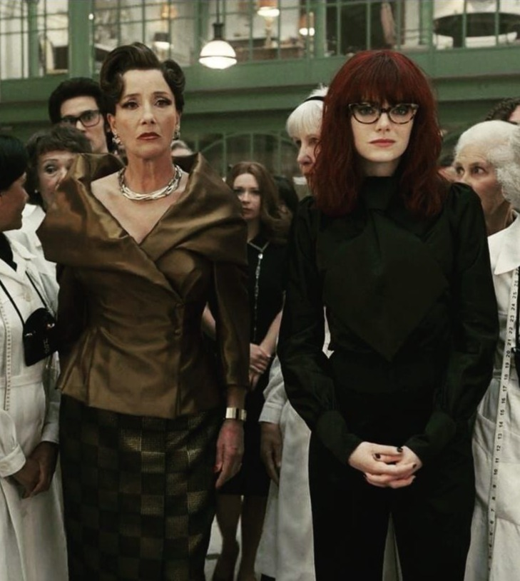
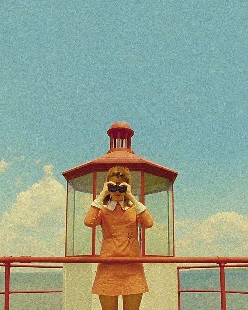
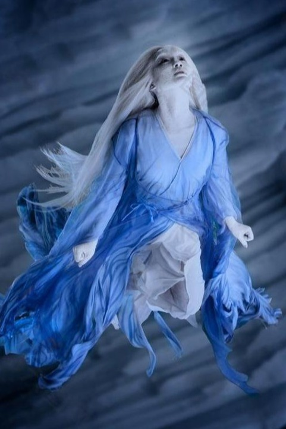
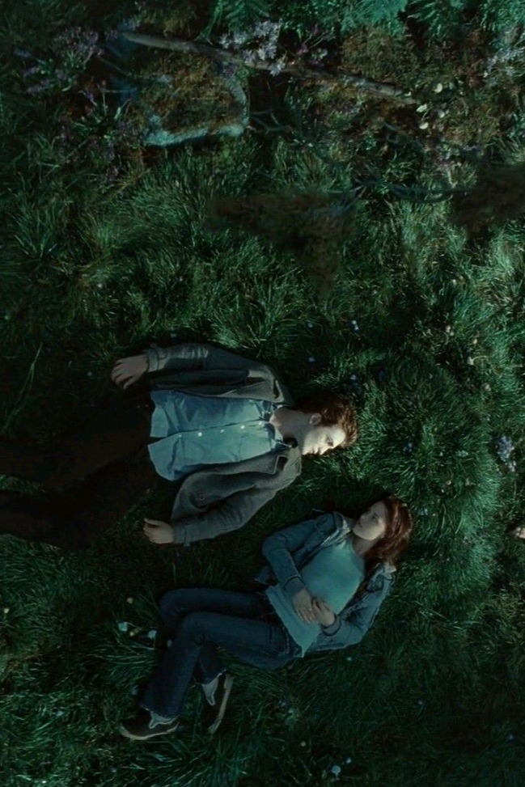
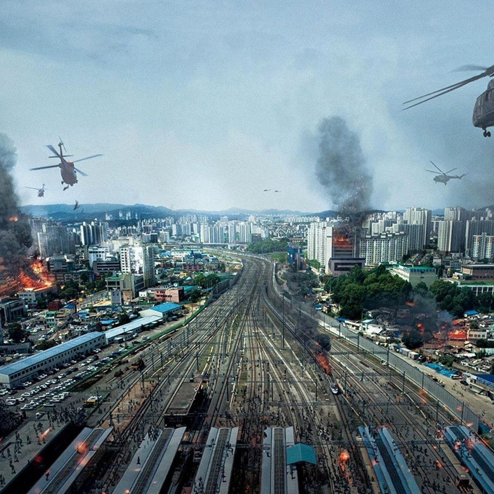
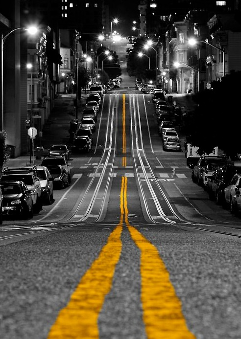
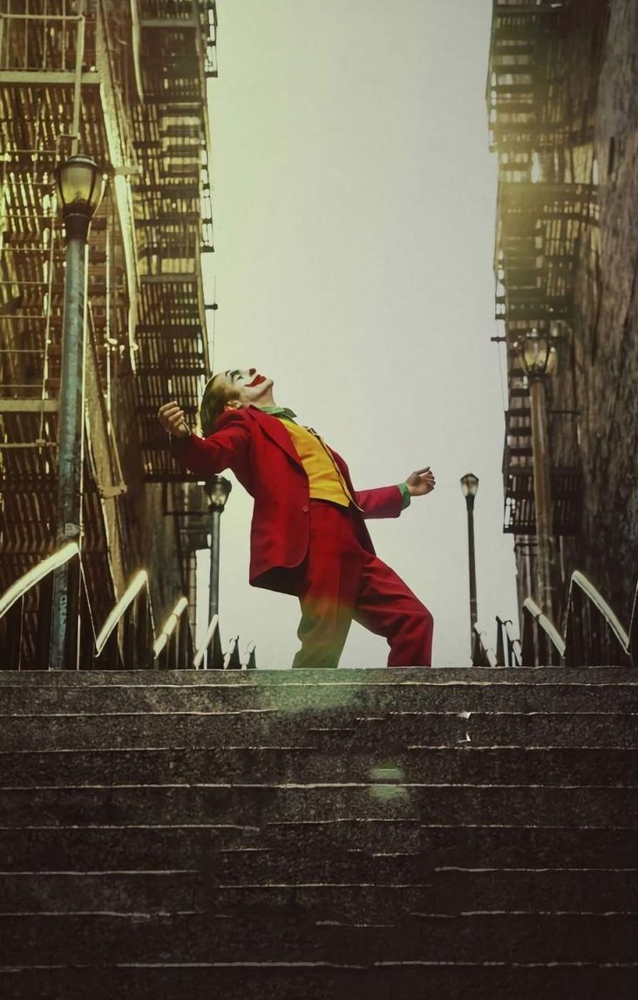
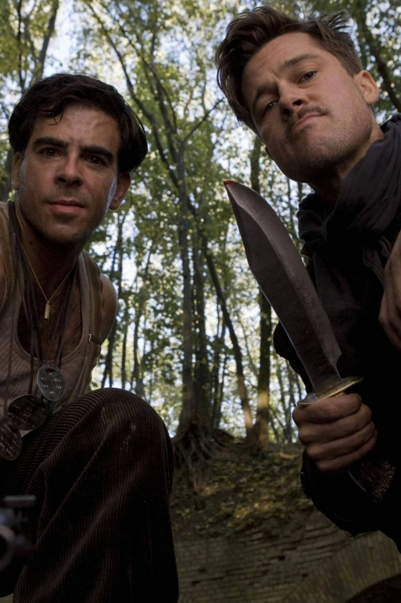
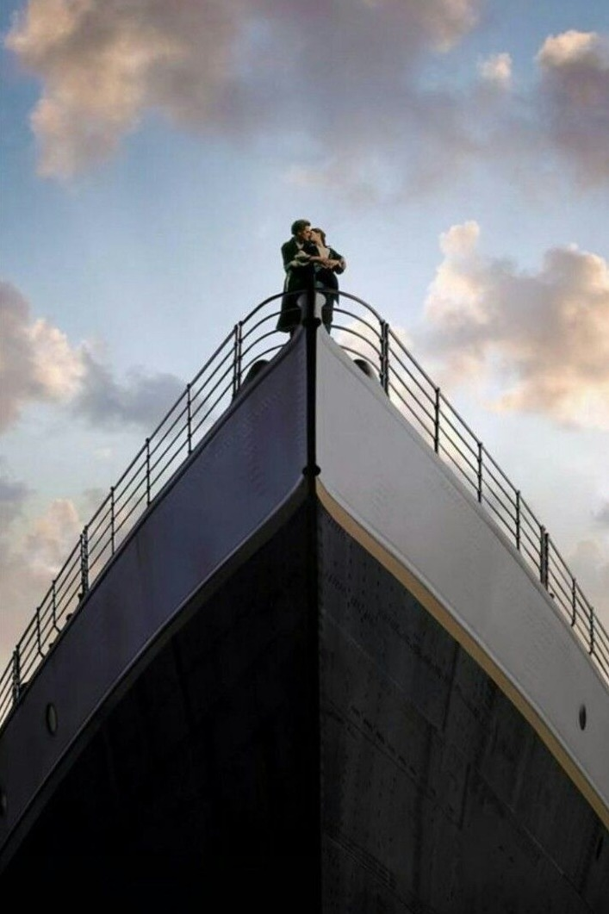
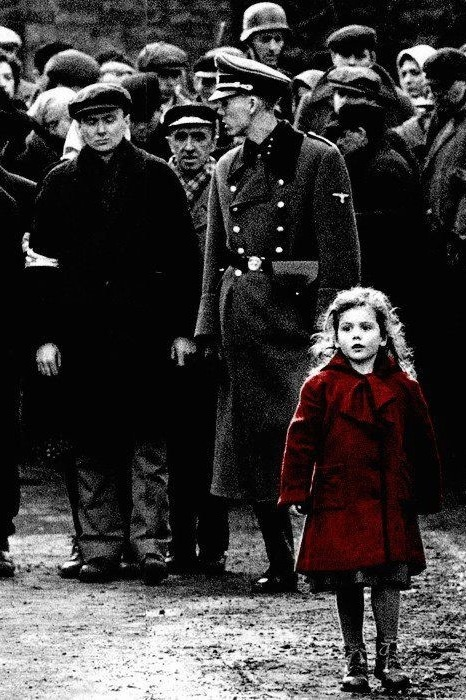

AI Website SoftwareFour Film Composition Styles 电影的四种构图秘密
In Cruella (2021), there is a striking shot of Cruella standing together with the villainous character.
The scene uses symmetrical composition, placing both characters in balanced positions within the frame.
This arrangement emphasizes their confrontation and the power dynamics between them, creating a
sense of tension and visual authority.
The symmetry draws the viewer’s eye to both faces simultaneously, highlighting the rivalry and intensity
of the moment within the narrative.
在《库伊拉》（2021）中，有一个镜头呈现库伊拉与女魔头站在一起。
画面采用对称构图，将两位角色置于画面中均衡位置。这样的安排凸显了她们之间的对峙和权力关系，
营造出紧张感与视觉威慑力。
对称构图自然引导观众同时关注她们的面部表情，强化了故事中竞争与冲突的紧张氛围。
Image source: Film still from Cruella (2021, dir. Craig Gillespie).

In Moonrise Kingdom (2012), there is a memorable shot of Suzy Bishop standing in a lighthouse-like
house, looking out through her binoculars.
The scene employs symmetrical composition — the tower, window, and Suzy herself are perfectly
centered within the frame. This geometric balance creates a calm and orderly visual rhythm that reflects
director Wes Anderson’s signature style.
Yet beneath the symmetry lies a quiet sense of isolation: Suzy is framed within the rigid structure, visually separated from the vast world she observes. The composition thus conveys both control and loneliness, suggesting her yearning for freedom and connection beyond the confined space.
在《月升王国》（2012）中，有一幕苏茜·毕晓普站在灯塔形的房子里，通过望远镜向外远望。
画面采用对称构图——塔身、窗框与苏茜都精确地置于画面中央，形成几何般的视觉平衡，
这也是导演韦斯·安德森（Wes Anderson）的标志性风格。
然而在这种秩序之下，也隐藏着一丝孤独：苏茜被框限在对称的建筑结构中，与她注视的广阔世界形成对比。
这种构图既象征了控制与约束，也传达出她内心渴望逃离与连接的情感。
Image source: Film still from Moonrise Kingdom (2012, dir. Wes Anderson).

In Painted Skin (2008), there is a striking shot of Xiaowei with white hair, tilting her head back.
The scene uses a top-down composition, where the camera looks directly down on the character. This perspective emphasizes her vulnerability and isolation, while the surrounding elements frame her body, drawing the viewer’s attention to her face and expression.
The overhead angle also creates a sense of detachment and otherworldliness, enhancing the mystical and tragic atmosphere of the scene.
在《画皮》（2008）中，有一个令人印象深刻的镜头，小唯白发仰头。
画面采用顶视构图，摄影机从上方俯拍角色。此视角强调了她的脆弱与孤立感，
同时周围环境元素构成画面框架，引导观众的注意力集中在她的面部与表情上。
俯视角度也营造出一种疏离与超凡的感觉，增强了场景的神秘与悲剧氛围。
Image source: Film still from Painted Skin (2008, dir. Gordon Chan).

In Twilight, the top-view composition captures a romantic yet subtly dangerous intimacy.
As the two protagonists lie together on the forest grass, the audience watches from above — the world fades away, leaving only the two of them.
This perspective conveys both the exclusivity of love and the hint of hidden danger that defines their relationship.
在《暮光之城》中，顶视构图被用来表现一种浪漫而危险的亲密感。
当男女主角并肩躺在森林的草地上时，观众从上方俯瞰他们——世界静止，只剩下他们两人。
这种角度既展现了爱情的专属与沉浸，也隐约暗示了吸血鬼身份带来的神秘与危险。
Image source: Film still from Twilight (2008, dir. Catherine Hardwicke).

In Train to Busan, leading lines are used to create a sense of depth and narrative tension.
The densely packed crowd, possibly zombies — forms directional lines that guide the
viewer’s gaze forward: from the chaos of human figures to the wrecked train, the burning houses,
and finally the rescue helicopter in the sky.
These visual cues build a powerful sense of apocalypse, drawing the audience into the
overwhelming flow of destruction.
在《釜山行》中，引导线构图被巧妙地用于制造视觉的深度与叙事的紧迫感。
画面中密密麻麻的人头形成线状的推进，引导观众的视线从近处的混乱人群，延伸至远方
——毁坏的火车、燃烧的房屋、空中盘旋的直升机。
这一连串的视觉线索带出末日氛围，让观众仿佛被卷入灾难的洪流中。
Image source: Film still from Train to Busan (2016, dir. Yeon Sang-ho).

This photograph takes the yellow line at the center of the road as its visual axis,
creating a strong leading line effect.
The line stretches from the bottom of the frame toward a distant vanishing point,
evoking depth, direction, and order.
Buildings and vehicles on both sides form an extended structure, enhancing the sense
of space and naturally guiding the viewer’s gaze forward.
Only the yellow tone is preserved against a grey-scale background, creating a striking
contrast that amplifies both focus and tension.
Amid this order and solitude lies a quiet will to keep moving—
in a world of grey, that single line of yellow becomes proof that the journey continues.
这张照片以道路中央的黄色线条为视觉主轴，形成强烈的引导线效果。
线条自画面底部延伸至远方的消失点，带出深度、方向与秩序感。
两侧的建筑与车辆共同构筑出延展的结构，让空间层次更分明，也自然引导观者的目光向前。
色彩上仅保留那一抹黄色，与灰阶背景形成强烈对比，突显画面的焦点与张力。
而在这份秩序与孤独之间，隐隐流露着一种前行的意志——
在灰色的世界里，那一点亮黄，是仍在向前的证明。
Image source: Pinterest (photographer unknown).
https://www.pinterest.com/pin/12314598977710245/

In Joker (2019), the iconic scene of Arthur dancing on the staircase uses a low-angle shot to symbolize his psychological transformation.
Once viewed as a marginalized man trapped at the bottom of society, he now appears powerful and liberated
— standing high above, both literally and emotionally.
The camera looks up at him, turning the once pitied figure into one that commands fear and awe.
Through this shift, the film captures the unsettling tension between empathy and terror.
在《小丑》（Joker, 2019）中，主角亚瑟在楼梯上跳舞的经典场景，运用了低角度构图
来象征他心理上的转变。
曾经被社会遗弃、被忽视的底层人物，如今站在高处，显得强大而自由。
摄影机从下往上仰视，让原本令人同情的角色，转变为让人畏惧与敬畏的存在。
这种视觉转变，也展现出观众情绪上的复杂拉扯——既心疼他，又对他的觉醒感到不安。
Image source: Film still from Joker (2019, dir. Todd Phillips).

This shot from Inglourious Basterds uses an extreme low-angle composition.
The camera is placed near the ground, with the characters looking down toward the lens,
creating a strong sense of dominance and control.
From this perspective, the audience feels as though they are being judged or overpowered,
evoking tension and vulnerability.
The upward lines of the trees enhance the depth and verticality, emphasizing the characters’
authority within the frame.
这一幕剧照采用了极低角度的仰拍。
摄影机几乎贴近地面，角色俯视镜头，形成强烈的压迫感与权力象征。
观众的视角如同被他们审视或控制的人，产生心理上的不安与屈从感。
背景中树木向上延伸的线条进一步强化了画面的纵深，使角色显得更具掌控力。
Image source: Film still from Inglourious Basterds (2009, dir. Quentin Tarantino).

This shot from Titanic (1997) combines low-angle and triangular composition.
Filmed from below, the bow of the ship forms a strong triangular shape that directs
the viewer’s gaze upward, where Jack and Rose embrace at the apex.
The low angle amplifies their sense of freedom and control — as if they are standing
“on top of the world.”
The vast sky and soft light add a tone of romance and transcendence, turning this moment
into a symbol of love that defies class and fate.
摄影机从下往上仰拍，使船头在画面中形成一个稳固的三角形结构，
三角形的顶点正好是杰克与露丝相拥的位置。
这种结构让画面显得稳定、庄严且具有象征性。
低角度的视角则强化了他们在那一刻的自由与主宰感——
他们“站在世界之巅”，暂时超越了阶级与命运的束缚。
同时，辽阔的天空与柔和的光线营造出浪漫与希望的氛围，
让观众感受到爱情的高昂与瞬间的永恒。
Image source: Film still from Titanic (1997, dir. James Cameron).

In Schindler’s List (1993), the shot employs selective color and off-center composition: the frame is almost
entirely black and white, except for the little girl’s red coat, which stands slightly to the right of the crowd.
The off-center placement breaks symmetry and leaves negative space on the left, guiding the viewer’s eye
across the scene and creating visual tension. The red coat immediately draws attention to the girl, emphasizing
her innocence and vulnerability while highlighting the broader tragedy surrounding her.
Moreover, the red color symbolizes her vitality and presence as a living individual amidst the monochrome crowd.
It also suggests both the danger she faces and the possibility of being noticed or rescued, adding layers of emotional and narrative depth.
在《辛德勒的名单》（1993）这幕中，导演运用了选择性上色与偏右侧构图：
画面几乎全为黑白色调，唯有小女孩的红色外套在拥挤的人群中偏右显眼。
偏右的位置打破了画面的对称性，并在左侧留出空白空间，引导观众视线穿越画面，
从而产生更强的视觉张力。红色外套立即吸引观众注意力，突显小女孩的无辜与脆弱，
同时强化她周遭悲剧环境的情绪冲击。
此外，红色象征她的生命力，使她在黑白人群中显得格外鲜活；
同时，它也暗示她所面临的危险以及可能被发现和拯救的希望，为画面增添了情感和叙事的层次感。
Image source: Film still from Schindler’s List (1993, dir. Steven Spielberg).

AI Website Software